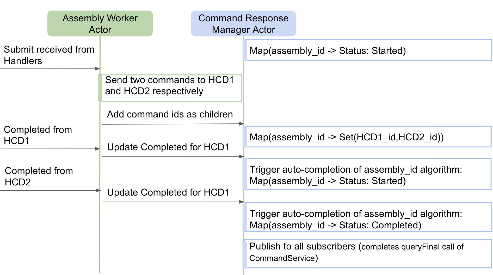

Command
Commands can be sent to other component and responses can be received in return. To understand the underlying framework of the components and its deployment, please refer to the framework technical doc.
Sending Commands from the Component
The types of commands that can be sent by a component are discussed here. In order to send commands to other components, a CommandService helper is needed. CommandService helper is used to send commands to a component in the form of methods instead of sending messages directly to a component’s Supervisor actor. The creation of a CommandService instance can be found here.
The operations allowed through CommandService helper are as follows:
- validate
- submit
- submitAndWait
- submitAllAndWait
- oneway
- onewayAndMatch
- query
- queryFinal
- subscribeCurrentState
Receiving Responses from Components
Submit
To understand the flow of the Submit command, please refer to this section.
Oneway
To understand the flow of Oneway, please refer to this section.
Validate
To understand the flow of the Validate command, please refer to this section and the code base for the implementation can be found here.
Command Response Manager
Upon receiving a Submit command by a component (for example an Assembly receives a Submit command), the component can choose to send one or more commands to HCD(s) as part of the Submit command’s execution. Once, all the response(s) are received from downstream HCD(s), the Assembly needs to complete the Submit as either Completed or Error. The CommandResponseManager provides different mechanisms to assist in generating the original Submit command’s final state.

The Assembly worker can communicate with CommandResponseManagerActor using CommandResponseManager coming via CswContext.
Current State Pub/Sub Functionality
The framework provides a way, based only on Akka, for one component to subscribe to CurrentState events provided in another component. This can be used by an HCD to keep an Assembly up to date on its internal state asynchronously outside of commands. This can also be coupled with the use of Oneway commands that do not provide completion responses to the sender as is done for Submit. The provider of CurrentState can use CurrentStatePublisher to publish its state from CswContext and the sender component can receive state using subscribeCurrentState from CommandService.
The Current State Pub/Sub is implemented in PubSubBehavior